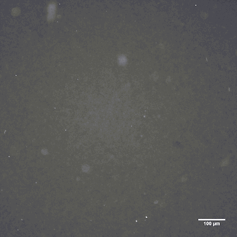
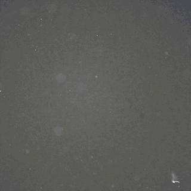
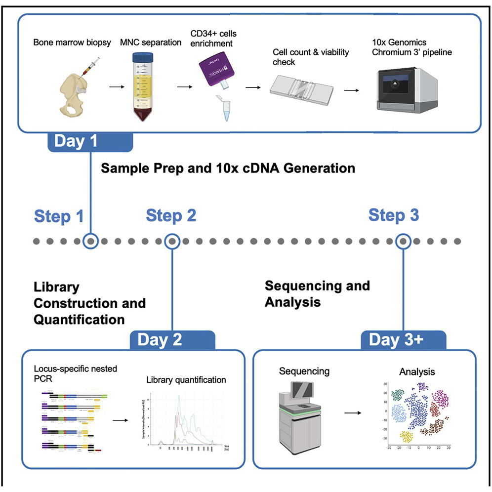
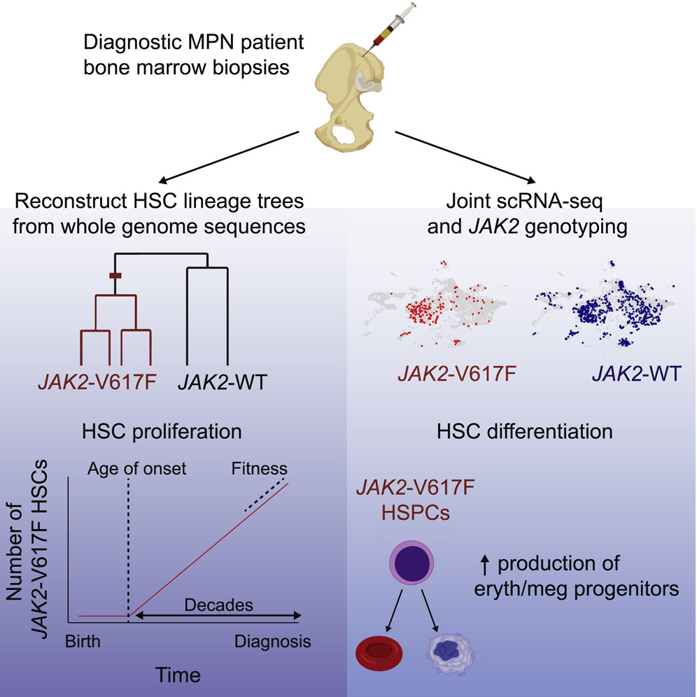
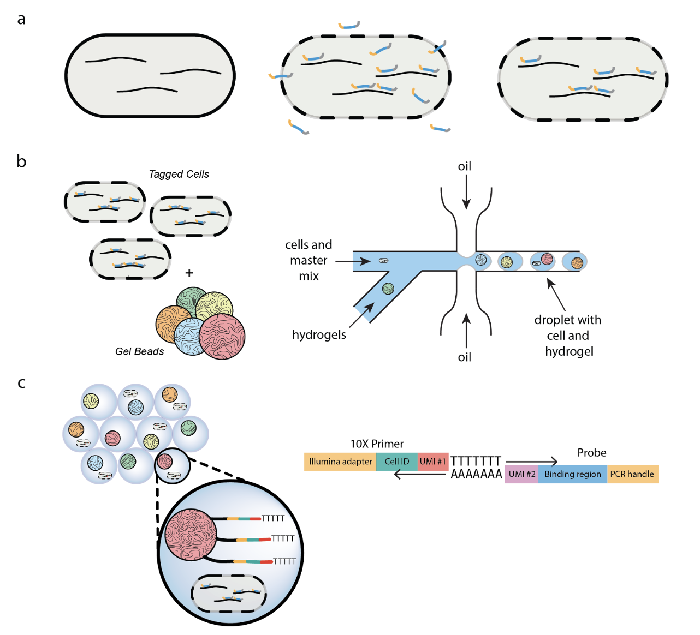

|
News: (Dec 2022) I'll be presenting my recent work on programmed transitions between micro- and millimeter order through microtubule bundling in cytoskeletal networks at Winter qBio 2023. Please come and say hi!
Research and Selected Publications
My research interests are in the intersection of synthetic biology and physics. Both living and non-living
active matters
create non-equilibrium processes in which many individual parts consumes energy and collectively generate motion and force.
Active matter exhibit many interesting properties, and I am most interested in the phase transition between local and global/collective
behavior. We use components from the cytoskeleton, motor proteins and microtubules, as a model system to decode non-equilibrium dyanmics
of active matters. I use theortical and experimental tools to investigate how the flow of time and the "greed" of nature evolve or alter
active materials.
I aim to: (1) understand and control the transition between local and global behavior, (2) bridge our unsderstanding of
biomolecules from cytoskeleton and mechanism of neurodegenerative diseases, and (3) design programmable active material using a number of novel biomolecules.
Aside from active matters, I'm also interested in developmental biology and biomechanics. I previously worked on developing single-cell technologies
to measure cell states in diverse biological systems (mainly on bacterial and mammalian cells). I also worked on building organoid systems based on
understanding obtained from our high resolution cell state data.
For an up-to-date and full publication list, please see my Google Scholar page.
|
Active Matters: Decipher and Program the Dynamical Behaviours of Self-Organizing Subcellular Structures\
|
|

|
Programmed transitions between micro- and millimeter order through microtubule bundling in cytoskeletal networks
[Manuscript in progress]
Active molecule induced movements are responsible for locomotion, reconfiguration and replication of living systems.
Experimental active-matter systems consist of motor proteins and microtubules are capable of multiscale
self-organization ranging from contractile and extensile phases with millimeter-scale behaviors to local aster
phases that only span a few micrometers. Here we show that the bundling effect of microtubules drives the phase
transition between global and local self-organization or our kinesin-microtubule experimental system.
|
|

|
Dynamic Flow Control Through Active Matter Programming Language
Fan Yang, Shichen Liu, Heun Jin Lee, Matt Thomson
arXiv, 2022
Active fluids with such living matter can be chaotic without a control mechanism, limiting their
utility for bioengineering applications. Recently-developed light-activatable motors, which only
crosslink the microtubules under illumination, have been previously applied to sculpt persistent
fluid flows. Combining theoretical predictions and experimental results, we find that the linear
superimposition can be achieved above a critical distance. Therefore, different flows can be realized
simultaneously within a single channel through the spatio-temporal composition and manipulation of
light patterns, making multitasking possible in a single channel. Our theoretical framework may be
extended for other emergent structures of cytoskeleton, and our platform has potentials for building
optically programmable flow-control devices.
|
Measuring Molecular States of Single Cells in Diverse Biological Systems
|
|

|
Integrating Readout of Somatic Mutations in Individual Cells with Single-Cell Transcriptional
Profiling
Shichen Liu, Maximilian Nguyen, Sahand Hormoz
Star Protocols, 2021
[code]
In many biological applications, the readout of somatic mutations in individual cells is essential.
For example, it can be used to mark individual cancer cells or identify progenies of a stem cell. Here,
we present a protocol to perform single-cell RNA-seq and single-cell amplicon-seq using 10X Chromium
technology. Our protocol demonstrates how to (1) isolate CD34+ progenitor cells from human bone marrow
aspirate, (2) prepare single-cell amplicon libraries, and (3) analyze the libraries to assign somatic
mutations to individual cells.
|
|

|
Reconstructing the Lineage Histories and Differentiation Trajectories of Individual
Cancer Cells in Myeloproliferative Neoplasms
Debra Van Egeren, Javier Escabi, Maximilian Nguyen, Shichen Liu, Christopher R. Reilly,
Sachin Patel, Baransel Kamaz, Maria Kalyva, Daniel J. DeAngelo, Ilene Galinsky, Martha Wadleigh, Eric S. Winer,
Marlise R. Luskin, Richard M. Stone, Jacqueline S. Garcia, Gabriela S. Hobbs, Fernando D. Camargo, Franziska Michor,
Ann Mullally, Isidro Cortes-Ciriano, Sahand Hormoz
Cell Stem Cell, 2021
[code]
Blood cancers known as myeloproliferative neoplasms (MPNs) are thought to originate when a driver mutation is
acquired by a hematopoietic stem cell (HSC). Here we quantified the effect of the JAK2-V617F
mutation on the self-renewal and differentiation dynamics of HSCs in treatment-naive individuals with MPNs
and reconstructed lineage histories of individual HSCs using somatic mutation patterns. We found that JAK2-V617F
mutations occurred in a single HSC several decades before MPN diagnosis and found that mutant HSCs have a selective
advantage. These results highlight the potential of harnessing somatic mutations to
reconstruct cancer lineages.
|
|

|
Droplet-Based Single Cell RNA Sequencing of Bacteria Identifies Known and Previously Unseen Cellular
States
Ryan McNulty, Duluxan Sritharan, Shichen Liu, Sahand Hormoz, Adam Z. Rosenthal
bioRxiv, 2021
[code]
Here, we develop a method that uses DNA probes and leverages an existing commercial
microfluidic platform (10X Chromium) to conduct bacterial single cell RNA sequencing. We
sequenced the transcriptome of over 15,000 individual bacterial cells, detecting on average 365
transcripts mapping to 265 genes per cell in B. subtilis and 329 transcripts mapping to 149 genes
per cell in E. coli. Our findings correctly identify known cell states and uncover previously
unreported cell states.
|
|
|
Other Stuff
I review for Star Protocols, an open-access peer-reviewed protocol journal from Cell Press.
I have a serious commitment towards cultivating future researchers who are interested in the intersection of
biology and physics. I have mentored a number of undergraduate students and research technicians. Feel free to reach
out if you are interested in the research we do here, and I would love to chat about opportunities.
I am passionate about automotive racing, occansionally you can find me racing at Willow Springs International Raceway
(both physically and in sim racing).
I also enjoying bloudering/climbing, making random stuff, Amateur radio (KE8GFG), and film photography.
|
| Gull bully, Toronto |
Skyline, Toronto |
| Experimenting with slide films, Shanghai |
Metal rose the 3rd |
| Ice climbing at Hyalite Fall, Montana |
| |